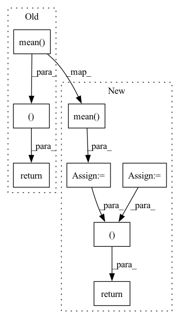

Pattern ID :35933

Before Change
z = samples @ weights
preds = np.ones_like(z)
preds[z <= 0] = -1
return np.mean(loss_fn(z * labels)), np.mean(np.equal(preds, labels))
After Change
preds[z <= 0] = -1
// calculate loss & acc
loss = np.mean(loss_fn(z * labels))
acc = np.mean(np.equal(preds, labels))
return loss, acc
In pattern: SUPERPATTERN
Frequency: 6
Non-data size: 8
Instances
Fragment ID: 102175239
Project Name: dmizr/phuber
Commit Name: 9f2669bee3905b6149032914955c2408077f0538
Time: 2020-12-15
Author: okyksl@gmail.com
File Name: plots/linear.py
M Class Name: AnonimousClass
N Class Name: AnonimousClass
M Method Name: evaluate_linear(4)
N Method Name: evaluate_linear(4)
M Parent Class:
N Parent Class:
M File Name: plots/linear.py
N File Name: plots/linear.py
M Start Line: 32
M End Line: 32
N Start Line: 72
N End Line: 75
'>
Before Change
sources_data = data["sources"]
mixture, sr = sf.read(mixture_data["path"])
mixture = mixture[start_idx: end_idx].mean(axis=1)
sources = []
for _source in __sources__:
source, sr = sf.read(sources_data[_source]["path"])
source = source[start_idx: end_idx].mean(axis=1)
print(source.shape)
sources.append(sources)
return mixture, sources
def __len__(self):
return len(self.json_data)
After Change
sources_data = data["sources"]
mixture, sr = sf.read(mixture_data["path"])
mixture = mixture[start_idx: end_idx].mean(axis=1, keepdims=True).transpose(1,0)
sources = []
for _source in __sources__:
source, sr = sf.read(sources_data[_source]["path"])
source = source[start_idx: end_idx].mean(axis=1, keepdims=True)
sources.append(source)
sources = np.concatenate(sources, axis=1).transpose(1,0)
mixture = torch.Tensor(mixture).float()
sources = torch.Tensor(sources).float()
return mixture, sources, title, start_idx, end_idx
def __len__(self):
return len(self.json_data)
'>
Fragment ID: 102175238
Project Name: tky823/dnn-based_source_separation
Commit Name: b45c77f184b9065d606b4e927c71c31896c359f5
Time: 2020-12-29
Author: 40362510+tky823@users.noreply.github.com
File Name: egs/dsd100/common/src/dataset.py
M Class Name: WaveDataset
N Class Name: WaveDataset
M Method Name: __getitem__(2)
N Method Name: __getitem__(2)
M Parent Class: DSD100Dataset
N Parent Class: DSD100Dataset
M File Name: egs/dsd100/common/src/dataset.py
N File Name: egs/dsd100/common/src/dataset.py
M Start Line: 40
M End Line: 50
N Start Line: 32
N End Line: 52
'>
Before Change
env.render()
episode_rewards.append(episode_reward)
return np.mean(episode_rewards), np.std(episode_rewards)
After Change
if render:
env.render()
episode_rewards.append(episode_reward)
mean_reward = np.mean(episode_rewards)
std_reward = np.std(episode_rewards)
if reward_threshold is not None:
assert mean_reward > reward_threshold, "Mean reward below threshold: "\
"{:.2f} < {:.2f}".format(mean_reward, reward_threshold)
if return_episode_rewards:
return episode_rewards, n_steps
return mean_reward, std_reward
'>
Fragment ID: 102175236
Project Name: dlr-rm/stable-baselines3
Commit Name: 8831eff163bc061727e16b7f728162776dc5ba27
Time: 2020-01-07
Author: antonin.raffin@dlr.de
File Name: torchy_baselines/common/evaluation.py
M Class Name: AnonimousClass
N Class Name: AnonimousClass
M Method Name: evaluate_policy(8)
N Method Name: evaluate_policy(5)
M Parent Class:
N Parent Class:
M File Name: torchy_baselines/common/evaluation.py
N File Name: torchy_baselines/common/evaluation.py
M Start Line: 9
M End Line: 22
N Start Line: 8
N End Line: 54
'>
Before Change
acc_avg = conf_mat.trace() / conf_mat.sum()
return np.mean(loss_sigma), acc_avg, conf_mat, path_error
After Change
loss_list = []
path_error = []
loss_mean = 0
acc_batch_list = []
for i, data in enumerate(data_loader):
inputs, labels = data["image"], data["label"]
inputs, labels = inputs.to(device), labels.to(device)
outputs = model(inputs)
loss = loss_f(outputs.cpu(), labels.cpu())
loss_list.append(loss.item())
loss_mean = np.mean(loss_list)
acc_batch_list.append((1 - np.abs(outputs.cpu().detach().numpy() - labels.cpu().detach().numpy())))
ocean_acc = np.concatenate(acc_batch_list, axis=0).mean(axis=0)
acc_avg = ocean_acc.mean()
return loss_mean, ocean_acc, acc_avg
'>
Fragment ID: 102175234
Project Name: liaorongfan/deeppersonality
Commit Name: 565a883600a2f9be36416c98383ef54294da8ab1
Time: 2021-05-23
Author: 15670381505@163.com
File Name: dpcv/engine/portrait_model_trainer.py
M Class Name: ModelTrainer
N Class Name: ModelTrainer
M Method Name: valid(4)
N Method Name: valid(4)
M Parent Class: object
N Parent Class: object
M File Name: dpcv/engine/portrait_model_trainer.py
N File Name: dpcv/engine/portrait_model_trainer.py
M Start Line: 60
M End Line: 87
N Start Line: 54
N End Line: 71
'>
Before Change
txt_con_loss = txt_con_loss.unsqueeze(0) // for multi-gpu setting
//bce_loss = self.bce_loss(self.img_feat_head(torch.mean(att_feats, dim=1)), labels)
return outputs, img_con_loss, txt_con_loss, self.img_feat_head(torch.mean(att_feats, dim=1))
def core(self, it, fc_feats_ph, att_feats_ph, memory, state, mask, query_matrix, cmn_masks, labels=None):
if len(state) == 0:
ys = it.unsqueeze(1)
After Change
img_con_loss = img_con_loss.unsqueeze(0) // for multi-gpu setting
txt_con_loss = txt_con_loss.unsqueeze(0) // for multi-gpu setting
//bce_loss = self.bce_loss(self.img_feat_head(torch.mean(att_feats, dim=1)), labels)
img_bce_loss = self.img_cls_head(torch.mean(att_feats, dim=1))
txt_bce_loss = self.txt_cls_head(torch.mean(txt_feats, dim=1))
return outputs, img_con_loss, txt_con_loss, img_bce_loss, txt_bce_loss
def core(self, it, fc_feats_ph, att_feats_ph, memory, state, mask, query_matrix, cmn_masks, labels=None):
if len(state) == 0:
ys = it.unsqueeze(1)
'>
Fragment ID: 102175233
Project Name: markin-wang/xpronet
Commit Name: 7e73abbd1521bcebbad9e3935b0f490cb4f59f6f
Time: 2021-11-27
Author: cserwj@gmail.com
File Name: modules/base_cmn.py
M Class Name: BaseCMN
N Class Name: BaseCMN
M Method Name: _forward(6)
N Method Name: _forward(6)
M Parent Class: AttModel
N Parent Class: AttModel
M File Name: modules/base_cmn.py
N File Name: modules/base_cmn.py
M Start Line: 497
M End Line: 508
N Start Line: 512
N End Line: 527
'>
Before Change
weights.append(weight)
if return_weight:
return np.mean(evidences), np.vstack(weights)
else:
return np.mean(evidences)
After Change
evidences.append(evidence)
weights.append(weight)
score = np.mean(evidences)
weights = np.vstack(weights)
if return_weights:
return score, weights
else:
return score
'>
Fragment ID: 102175241
Project Name: thuml/transfer-learning-library
Commit Name: 56ccfd7416b21b95351dffacc2aab1fe30f68561
Time: 2022-03-14
Author: liuyong1095556447@gmail.com
File Name: tllib/ranking/logme.py
M Class Name: AnonimousClass
N Class Name: AnonimousClass
M Method Name: log_maximum_evidence(4)
N Method Name: log_maximum_evidence(4)
M Parent Class:
N Parent Class:
M File Name: tllib/ranking/logme.py
N File Name: tllib/ranking/logme.py
M Start Line: 34
M End Line: 56
N Start Line: 39
N End Line: 64